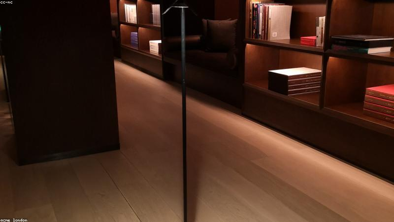

NO. 24 · 勵志
凌晨四點的書桌
你熬的每一夜，都在為某個轉彎鋪路。
她邊工讀邊準備考試，每天凌晨四點起床讀書，同事笑她枉費。
放榜那天她上榜，名次還不差。有人問秘訣，她說：『沒有，只是別人睡了我沒睡。』
後來她帶的學弟妹，都學她那句：『四點的天，特別安靜，適合做自己。』

她邊工讀邊準備考試，每天凌晨四點起床讀書，同事笑她枉費。
放榜那天她上榜，名次還不差。有人問秘訣，她說：『沒有，只是別人睡了我沒睡。』
後來她帶的學弟妹，都學她那句：『四點的天，特別安靜，適合做自己。』